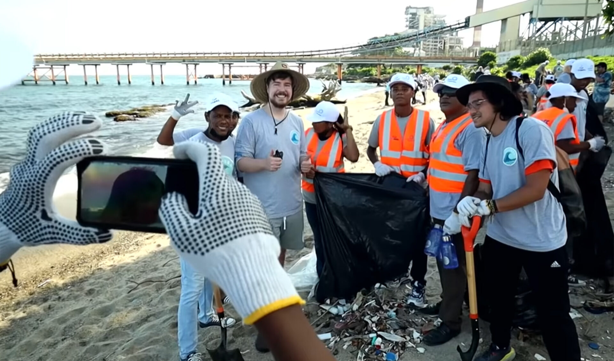

Beach Cleanup with #TeamSeas in the year 2021
HOW WE HELP
Our organization serves as a crucial bridge between Mr. Beast's projects and the community, working tirelessly to raise funds that contribute to the success of his various initiatives. Whether it's planting trees, feeding the hungry, or supporting local businesses, we are passionate about amplifying Mr. Beast's efforts and encouraging widespread participation.
One of our key roles is to gather like-minded individuals who share a commitment to making a difference. Through community engagement and outreach, we bring people together to actively participate in Mr. Beast's projects. We believe that collective action is the key to creating lasting change, and by uniting people from all walks of life, we can make a significant impact on the challenges our world faces.
In addition to our collaboration with Mr. Beast, we are also dedicated to advocating for help in addressing the diverse struggles faced by communities worldwide. From environmental issues to social justice causes, we use our platform to raise awareness and support for those in need. By leveraging our network and resources, we aim to create a global community that stands together in the face of adversity.
Join us on this incredible journey of compassion and impact. Together, we can be a force for good, supporting Mr. Beast's projects and advocating for positive change around the world. Let's make a meaningful difference and leave a lasting legacy of compassion, kindness, and generosity.
Active Charity/ies
End Hunger